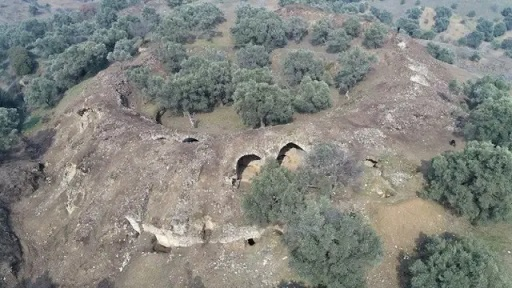

|
T U R Q U Í A La Anatolia de los Romanos
Poblada desde los orígenes del hombre,
fueron los griegos los primeros en establecer colonias importantes. Así
nació Mileto en el VII a.e.c., Esmirna, Éfeso y Priene, que en el año 500
a.e.c. deciden unirse para crear la federación de ciudades jónicas. A continuación os mostramos algunos de los restos romanos hallados en Turquía.
Ver: Éfeso
Estambul: Poblado desde la antigüedad. La fundación de Estambul se remonta al siglo VII a.e.c. por colonos griegos de Megara. Su rey Byzas legó su nombre a la nueva ciudad: Byzantion. Durante la época romana, Byzantium no tuvo especial relevancia hasta el año 196. Tras la muerte de Comodo, la ciudad se decantó del lado de Cayo Pescennius Niger en la contienda civil entre éste y Septimio Severo. La ciudad fue reducida a escombros y posteriormente reconstruida por Septimio Severo. Pero el momento cumbre de Byzantium vino de la mano del emperador Constantino, cuando en el 330 la designó como residencia y capital imperial. En nuestra visita, desembarcamos del crucero y nos desplazamos al centro de la ciudad en tranvía. El Circo romano data de época de Séptimo Severo y posteriormente reformado y ampliado por Constantino. Funcionó durante más de mil anos. La espina estaba adornada por una línea de estatuas, obeliscos y columnas. Actualmente se pueden encontrar tres de ellas, el Obelisco egipcio, la columna Serpentina y la columna de Constantino. Esta situado en la zona más antigua de la ciudad.
La Cisterna de
Yerebatan fue construida en tiempos de Justiniano I (527-565) para
abastecer al Palacio Bizantino. El emplazamiento fue el subterráneo de
una basílica romana de la que hoy no queda nada. Para llenar la cisterna
se recurría a los acueductos de Valente y de Adriano. Estos acueductos
recibían el agua de los Bosques de Belgrado, a unos 20 kilómetros de
Constantinopla. La basílica tiene unas dimensiones de 140x70m y se
calcula que podía almacenar unos 100.000 metros cúbicos de agua.
El Acueducto de Valente fue construido por el emperador bizantino Valente en el año 375. El acueducto, unía la tercera y la cuarta colina de la parte antigua, se utilizaba para llevar el agua al ninfeo desde el bosque de Belgrado. El acueducto tiene una altura de unos 20m desde su base. Tenía 1Km de longitud, aunque actualmente solamente se conservan unos 600m en el barrio de Unkapanı y 200 metros en Beyazıt. En la construcción del acueducto se utilizaron las murallas de ciudad antigua de Khalkedon (Calcedonia). También aconsejamos la visita a la Mezquita Azul, Santa Sofía, Palacio de Topkapi, Museo Arqueológico ......
Ankara: El casco antiguo de la ciudad, está rodeado por la ciudadela. De época romana destaca el teatro de Ankara, el templo de Augusto, construido en el año 10 como tributo al Emperador y las termas romanas. Ayaş: La antigua Elaiussa Sebaste fue fundada en el período helenístico (siglo II a.e.c.) y alcanzó su apogeo en los siglos II y III. En el siglo VII, la ciudad fue abandonada, y sus puertos quedaron sepultados bajo capas de sedimento. Antalya: Sus orígenes se remontan al período Paleolítico. La ciudad de tomó su nombre del rey de Pérgamo, Atalo II. Se convirtió en una provincia de Roma en el año 67 a.e.c. Yalvac: Está cerca de la antigua Antioquia de Pisidia. De época romana destacan el acueducto, el templo de Augusto, el teatro y las termas.
Aspendos:
El teatro de Aspendos es
el teatro mejor conservado que ha subsistido hasta nuestros días, tiene una
capacidad para 15.000 espectadores. Fue construido durante la época del emperador Marco Aurelio por el arquitecto Zenón a mediados del siglo II.
Las inscripciones en griego y latín de las entradas de la escena indican que fue
un regalo de dos hermanos, Curcio Crispino y Curcio Auspicato, dedicado «a los
dioses del país y a la Casa Imperial». Su estructura se ha conservado
admirablemente. La escena mide unos 25m de altura por 110 de ancho en la
fachada exterior.
Afrodisias: La
ciudad de Afrodisias se hizo famosa por el culto a Afrodita,
madre de Eneas, el legendario fundador de Roma. Este
santuario se convirtió en un lugar de importada nacional entre los romanos.
Afrodisias también llegó a ser un
importante centro artístico por las obras de sus
escultores. Destaca el tretapilon, puerta monumental muy elaborada
que originalmente poseía cuatro filas de cuatro columnas. La puerta fue erigida
a mediados del siglo II y formaba parte de una vía procesional que conducía al
templo de Afrodita. Al oeste de las termas de Adriano se encuentra el pórtico de
Tiberio.
Ver: Izmir Ver: Pamukkale
Priene:
Conocido en la antigüedad, como el Golfo de Latmos, se encuentra uno de los
parques arqueológicos más importantes de Turquía, Priene. Pergamo: Es
uno de los principales parques arqueológicos de Turquía.
Muğla: En Mugla podemos visitar la villa del pescador Phainos, que vivió en el siglo II en la antigua ciudad griega de Halicarnaso. Destacan ruinas de la villa y un mosaico de 20 metros cuadrados, un pozo, un baño romano, trabajos de mármol, cerámica, botellas de perfume y equipos de pesca. Didimi: Destaca el templo de Apolo, el didimeión, es una de las más grandes construcciones de la antigüedad. Es un templo díptero (con doble fila columnas) es el más grande conservado, mide cien metros de largo por cincuenta de ancho y está construido sobre una fuente sagrada. Aydin: En marzo de 2021, hallan un espectacular anfiteatro romano en Turquía con capacidad para unos 20.000 espectadores. El edificio, del siglo III, se encontraba escondido en un campo de olivos e higueras. Algunas de sus partes se conservan en gran estado.

|